Reportman - Add COMANYDATA Dataset
The process to add the Company dataset and to add the references data fields from the tables to the report, is basically as follows:
- Add the COMANYDATA Dataset
- Add the SQL for the Company information to be available in the dataset.
- Add or drag the fields (columns) from the COMPANY Dataset onto the report.
- Add labels describing data fields (Expressions) on the report.
|
|
In this topic of the documentation, the You may add |

- Tidy the report - Format expressions and labels, insert a horizontal lines, etc.
Add COMANYDATA Dataset
The company data SQL consists of two (2) tables (i.e. SYSVARS and SYSVARSEXT) tables in the Database.
To write SQL is actually very simple, for example, “select data from table”, where data is a valid field name (e.g. ScompanyName Company name) in the table and table is a valid table name (e.g. Sysvars). To call the company name and Fax number (as entered in the Setup → Company info (Setup ribbon) screen (it is stored in the sysvars table)), you may simply write:
select SCompanyName CompanyName, SFaxNumber Fax from Sysvars.
To add the Company Dataset:
- On the "Report man" screen, select a report. In this example, the "Copy of New.rep" is selected.
- On the "Report manager designer" screen for the selected report, click on the Database connections and datasets icon.
- On the "Database connections and datasets" screen, select Datasets tab and click on the Add icon.
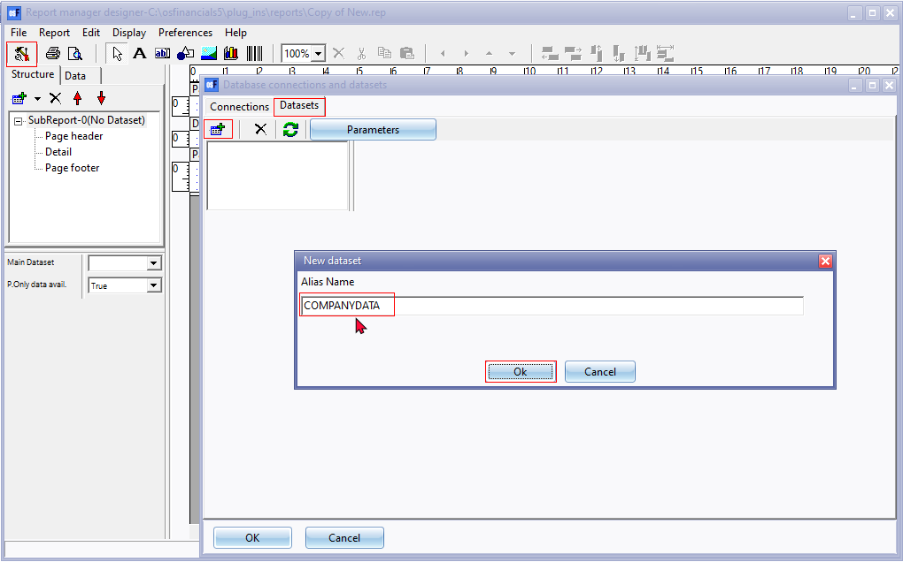
- On the "New dataset" screen, Enter "COMPANYDATA" as the Alias Name and click Ok.
|
The next step is to add the SQL for the data in the SYSVARS and the SYSVARSEXT tables. |
ADD COMPANYDATA SQL
The next step is to add the SQL for the data in the SYSVARS and the SYSVARSEXT tables. The data as stored in these two tables is mainly added in the Company info (Setup ribbon) and the Reporting groups names as set in the Groups (Setup ribbon).
To add SQL for the Company Dataset:
- On the Datasets tab select the "COMPANYDATA" dataset. The "COMPANYDATA" dataset is empty at this stage. You need to copy or add the SQL from the "SYSVARS" and "SYSVARSEXT" tables.
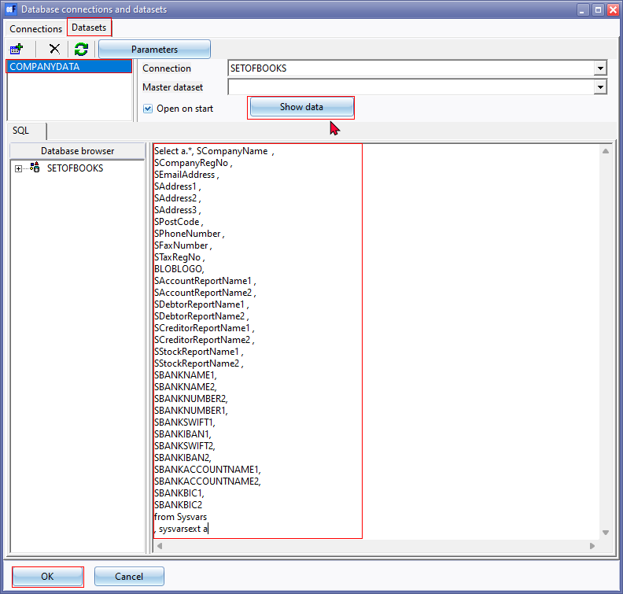
- To add the tables, copy or enter the following SQL in the SQL box:
Select a.*, SCompanyName ,
SCompanyRegNo ,
SEmailAddress ,
SAddress1 ,
SAddress2 ,
SAddress3 ,
SPostCode ,
SPhoneNumber ,
SFaxNumber ,
STaxRegNo ,
BLOBLOGO,
SAccountReportName1 ,
SAccountReportName2 ,
SDebtorReportName1 ,
SDebtorReportName2 ,
SCreditorReportName1 ,
SCreditorReportName2 ,
SStockReportName1 ,
SStockReportName2 ,
SBANKNAME1,
SBANKNAME2,
SBANKNUMBER2,
SBANKNUMBER1,
SBANKSWIFT1,
SBANKIBAN1,
SBANKSWIFT2,
SBANKIBAN2,
SBANKACCOUNTNAME1,
SBANKACCOUNTNAME2,
SBANKBIC1,
SBANKBIC2
from Sysvars
, sysvarsext a
- Click on the Show data button. The data should be displayed correctly.
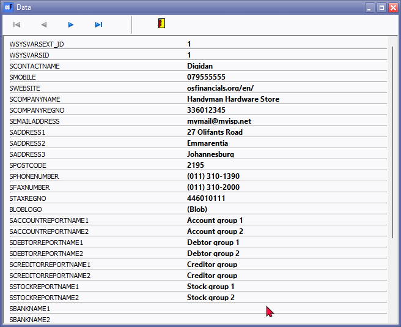
- Click on the 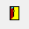 Close icon to close the "Data" screen.
- Click OK on the "Database connections and datasets" screen.
|
The next step is to add or drag the data from the SYSVARS and the SYSVARSEXT tables onto the report (Page header as in this example. |
- If you close the "Report manager designer" screen, remember to Save the report.
|
|
Whenever you close the "Report manager designer" screen, after editing your report, remember save the report. If you click on No, on the "Save report?" confirmation message, your changes will be discarded (lost). |

Add Expressions (fields from tables)
Once you have added the Company data dataset, the tables of the SYSVARS and SYSVARSEXT will be available.
To print the data from these tables, you need to drag these to the Page header.
To add Expressions from the COMPANYDATA Dataset to the Page header:
- Click on the Data tab and select the COMPANYDATA Dataset.
- Click on the "Detail" section of the report structure and drag it downwards to add space for the Page header.
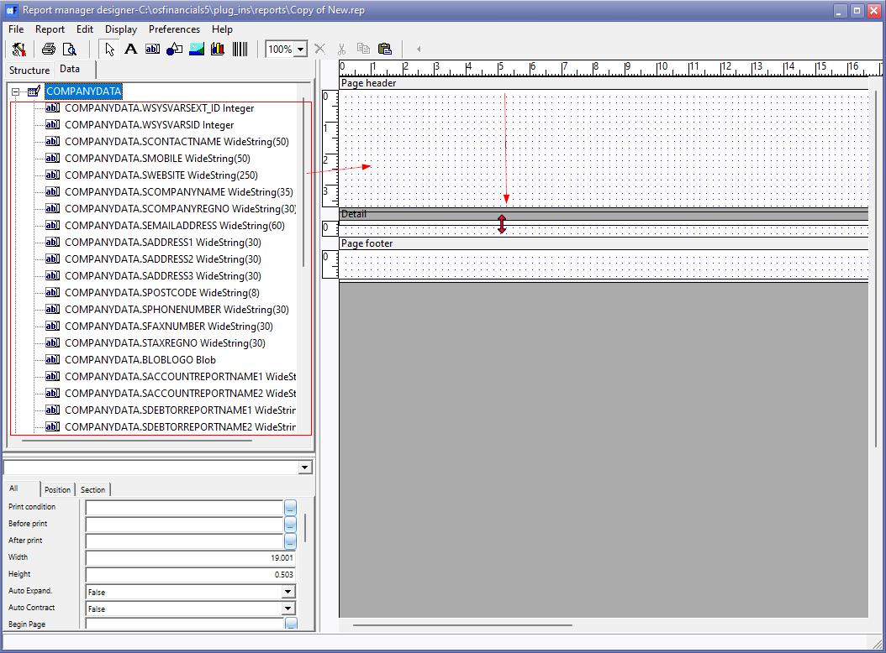
- Select and drag (drag and drop) the data Expressions you wish to display (print) on the Page header section of the report.
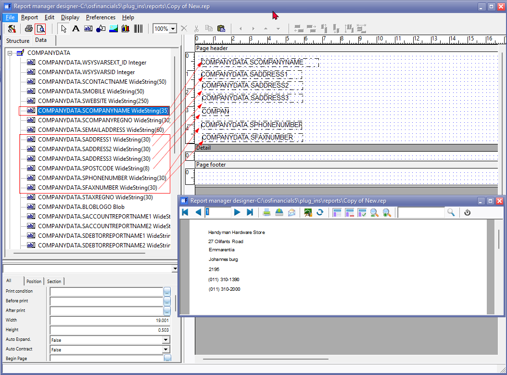
|
|
When selecting the String Data type the default number of characters (including spaces and Special characters (e.g. the Ampersand & , The Underscore _ , etc. will be counted for a character). This is the field length and the size is indicated with a numeric value in brackets (e.g. (30), etc.). This will by default determine the width of the field when data is dragged and dropped on the section of the report. |

- Drag all the fields from the Company dataset, you need to print on the Report header.
- Once all required data expressions is added, you may click on the Print preview icon.
|
|
On the report there are a lot of different numbers displayed (e.g. Telephone and Fax number as well as the Company registration number). This may be confusing to the end-user of the report. You may need to add some labels to explain what these numbers mean. |
- Take note of the labels you wish to add to describe the data on the printed report, where necessary.
- Close the "Print preview" screen.
|
The next step is to add labels, describing the data, to print on the report where necessary. |
Add labels to the report
The labels will add a description to the fields (data) printed in the Page header.
There are 2 methods of adding labels to a report:
 Static text - Add plain text labels.
Static text - Add plain text labels. Expressions - Add translatable expression labels to reference the language id. This will use the language files to translate the labels the languages are changed (Switch language on the Start ribbon).
Expressions - Add translatable expression labels to reference the language id. This will use the language files to translate the labels the languages are changed (Switch language on the Start ribbon).
Add COMPANYDATA Static text labels
All reports and most of the document layout files is translatable via the language files.
The static text labels is used in the "Tutorial-Invoice" layout file.
To add static labels to the report:
- Move and drag the data fields to create some space for the text labels.
- Select the Text icon to insert static text.
- Click and drag it to the required size and space on the report (e.g. Page header).
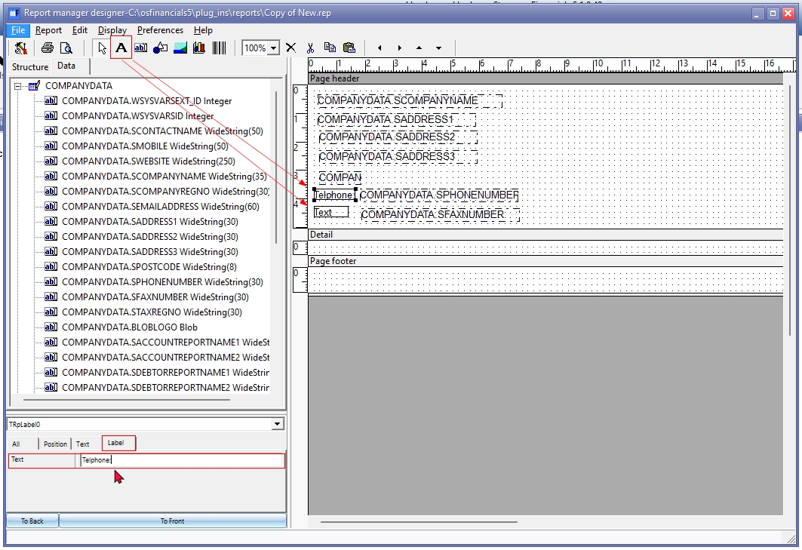
- On the Label tab, enter the Text you need to display for the field (e.g. Telephone).
- Repeat the process for all labels.
- Click on the Print preview icon to view if the labels do not overlap, etc.
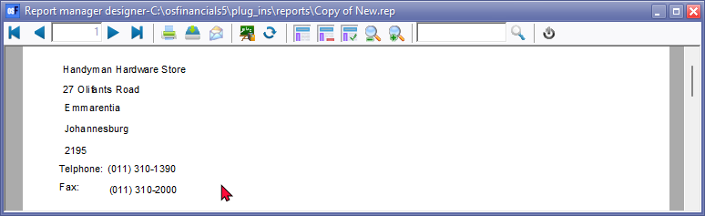
- Take note of the layout and presentation on the "Print preview" screen.
- Close the "Print preview" screen and do the necessary changes, if required.
Format text
You may wish to set the Text properties (e.g. Font, font size, bold, italic, etc.) for specific expressions (fields).
On the Text tab, you may set the alignment, fonts, etc. You may click on the "WFont Name" or "Font Style" field to set the font properties.
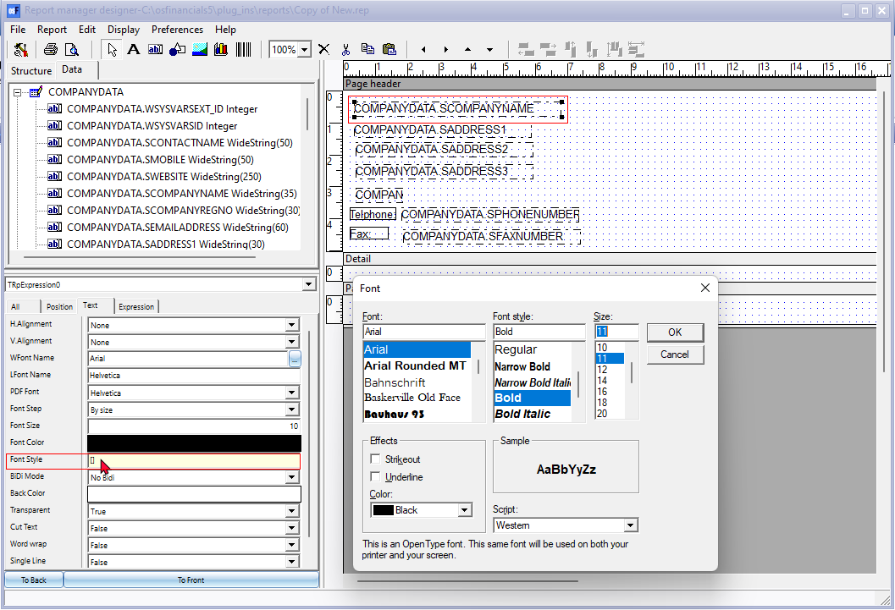
Insert a Simple drawing Horizontal line
To insert a Simple drawing (horizontal line), select the Simple drawing icon.
On the required section, click and draw the length of the shape. By default rectangle shape will be inserted.
On the Shape field, select Horizontal line.
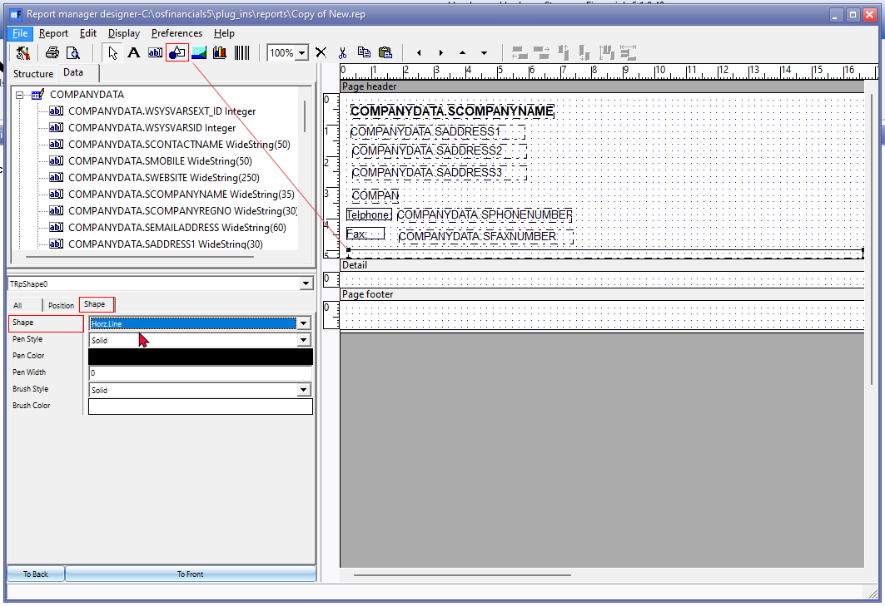
Tidy the Page header - You may need to stretch and move the expressions and labels around, until you are happy with the layout.
|
|
You may click on the Print preview icon and save your report in the available output formats (select Save (Ctrl+S) 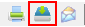 - “Save metafile as” screen). You may open the saved report in your systems default associated program (app) to check how the report will be displayed in the selected file format. For example, if you wish to use the report in a the Html format to display in web browsers, some expressions and labels may not be displayed correctly. You then may need to move or stretch the objects (labels, expressions). |
|
|
If you print the PDF format of your report, the "Transparent" setting, if set to "False", will display a rectangular border around the object (eg Static text, Expression, etc.). You can fix this by setting the "Transparent" setting to "True". |
|
|
Whenever you close the "Report manager designer" screen, after editing your report, remember save the report. If you click on No, on the "Save report?" confirmation message, your changes will be discarded (lost). |